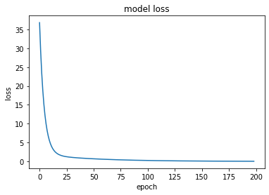
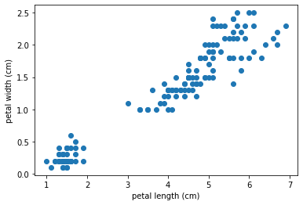
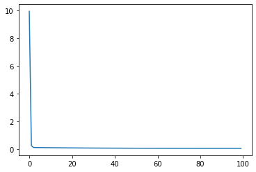
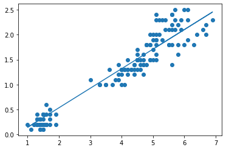

Code
import numpy as np
import matplotlib.pyplot as plt
x = np.array([-1, 0, 1, 2, 3, 4]) # Data
y = np.array([-3, -1, 1, 3, 5, 7]) # AnswerA problem: How do we recognize (label) images? Can we write a program to do the same?

“The principal difficulty … lay in the fact of there being too much evidence. What was vital was overlaid and hidden by what was irrelevant. Of all the facts which were presented to us we had to pick just those which we deemed to be essential, and then piece them together in their order, so as to reconstruct this very remarkable chain of events.” Sherlock Holmes (The Naval treaty, 1893)
Quiz (5 min): A simpler challenge: Find the rule \(y = f(x, \beta)\) for x and y below
import numpy as np
import matplotlib.pyplot as plt
x = np.array([-1, 0, 1, 2, 3, 4]) # Data
y = np.array([-3, -1, 1, 3, 5, 7]) # AnswerNotice: a more realistic scenario would allow for errors: \(y = f(x, \beta) + \epsilon\)
\[f(X, \beta) = \beta_0 + \beta_1 x\]
Ordinary Least-squares fit: analytical
\[\underset{\beta}{\mbox{argmin}} || y - f(X,\beta)||^2 \longrightarrow (\beta_0, \beta_1)=(-1,2)\]
Predictions: for two new values \((x=10, -40)\)
x_new = np.array([10, -40])
y_new = -1 + 2.0*np.array(x_new)
print('predictions: ', x_new, "->", y_new)predictions: [ 10 -40] -> [ 19. -81.]The modeling steps: - define the data - define the model - fit - evaluate - predict
from sklearn import linear_model
from sklearn.metrics import mean_squared_error
lm = linear_model.LinearRegression() # define model
xr = x.reshape(-1,1) # define data (+restructuring for specific tool)
lm.fit(xr, y) # fit c.f. R: lm(Y ~ X)
# report fit
print('Fitted Parameters ', lm.intercept_, lm.coef_)
yp = lm.predict(xr) # prediction
MSE= mean_squared_error(y, yp) # evaluate fit. other scores: R2=lm.score(xr, y)
print('Mean Squared Error: ', MSE)
# predict y for some new x
x_new=np.array([10, -40])
y_new = lm.predict(x_new.reshape(-1,1))
print('predictions: ', y_new)Fitted Parameters -0.9999999999999991 [2.]
Mean Squared Error: 7.231224964525941e-31
predictions: [ 19. -81.]import tensorflow as tf
print('tf version:',tf.__version__)
# define model - the "black box"
model = tf.keras.Sequential()
model.add( tf.keras.layers.Dense(units=1, input_shape=[1]) )
# define optimization and loss
model.compile(optimizer='sgd', loss='mean_squared_error')
# fit model ###
fit_history = model.fit(x,y, epochs=100, verbose=0)
# report fit ####
print('Fitted Parameters ', model.trainable_variables)
print('Mean Squared Error (loss): ', fit_history.history['loss'][-1])
# make predictions ####
x_new = [ 10.0 , -40.0 ]
y_new = model.predict(x_new)
y_ana = -1 + 2.0*np.array(x_new)
print('analytical: ', y_ana)
print('numerical: ', y_new)tf version: 2.8.2
Fitted Parameters [<tf.Variable 'dense_55/kernel:0' shape=(1, 1) dtype=float32, numpy=array([[1.8585451]], dtype=float32)>, <tf.Variable 'dense_55/bias:0' shape=(1,) dtype=float32, numpy=array([-0.5614597], dtype=float32)>]
Mean Squared Error (loss): 0.11189737915992737
WARNING:tensorflow:5 out of the last 19 calls to <function Model.make_predict_function.<locals>.predict_function at 0x7f1a699cc8c0> triggered tf.function retracing. Tracing is expensive and the excessive number of tracings could be due to (1) creating @tf.function repeatedly in a loop, (2) passing tensors with different shapes, (3) passing Python objects instead of tensors. For (1), please define your @tf.function outside of the loop. For (2), @tf.function has experimental_relax_shapes=True option that relaxes argument shapes that can avoid unnecessary retracing. For (3), please refer to https://www.tensorflow.org/guide/function#controlling_retracing and https://www.tensorflow.org/api_docs/python/tf/function for more details.
analytical: [ 19. -81.]
numerical: [[ 18.02399]
[-74.90327]]Notice: - tensorflow supports generic modeling steps: define model, define loss function, fit model, predict. - the most cryptic (and the most flexible!) part is the definition of the “black box”. We will spend much more time with this - so don’t panic. - There are many alternative frameworks: pyTorch, Caffe2, … In this course we use the high-level API Keras rather than Tensorflow directly. - tensorflow has new data structures that need to get used to: e.g. fitted_parameters - tensorflow model predictions appear less accurate (and slower) for this task of linear regression. This is because they have been obtained from an iterative approach (epcohs). In contrast, sklearn:LinearRegression() uses fast analytical tools (specific for linear regression) under the hood. - Tthe tensorflow approach is more generic and extends to much more complex models - The iteration can be monitored by the loss function (MSE) to assess convergence
plt.figure()
plt.plot(fit_history.history['loss'][1:])
plt.title('model loss')
plt.ylabel('loss')
plt.xlabel('epoch')
plt.show()
Task (10 min): Play with the new toy !
The model is fitted iteratively (iterations = epochs) to reduce some loss function (here: mean_squared error MSE).
Change the number of epochs and/or the new data points \(x\_new\). Observe the different results.
You may also activate the verbose function to see some progress reporting
Follow the above example to fit a more realistic data set to a linear model.
Explore the Iris data set: iris.data. What are the variables? See also here: wikipedia link
Fitting: Implement a linear fit making use of the tensorflow approach as shown above
Convergence: Plot the loss (MSE) check if it has been reduced over the fitting epochs: \(\to\) plot fit_history.history[‘loss’]
Parameters: Check the slope (weight) and intersect (bias): \(\to\) model.layers[0].get_weights()
Predictions: use the model to obtain the predicted values yp \(\to\) model.predict()
plot the fitted regression line over the scatter plot
if time allows: feel free to repeat the above analysis for other variables from the Iris data set
import matplotlib.pyplot as plt
from sklearn import datasets
iris = datasets.load_iris()
ix, iy = 2,3 # you might want to chose different columns
x = iris.data[:,ix]
y = iris.data[:,iy]
plt.scatter(x, y)
plt.xlabel(iris.feature_names[ix])
plt.ylabel(iris.feature_names[iy])
plt.show()
Implement a linear fit with tensorflow below.
# it's good practise to test your shapes frequently
print('x.shape: ', x.shape)
print('y.shape: ', y.shape)
# It's good practise to name your models and layers
model = tf.keras.Sequential(name='LM_model_01')
model.add( tf.keras.layers.Dense(units=1, input_shape=(1,), name='1st_layer') )
model.compile(optimizer='sgd', loss='mean_squared_error')
fh = model.fit(x,y, epochs=100, verbose=0) x.shape: (150,)
y.shape: (150,)plt.plot(fh.history['loss'])
plt.show()
print('Mean Squared Error (loss): ', fh.history['loss'][-1])
#print('Fitted Parameters ', model.trainable_variables)
slope = model.layers[0].get_weights()[0][0][0]
inter = model.layers[0].get_weights()[1][0]
print('slope (weight): ', slope)
print('intersect (bias): ', inter)
yp = model.predict(x)
# yp = inter + slope * x # alternatively
plt.scatter(x, y)
plt.plot(x,yp)
plt.show()
Mean Squared Error (loss): 0.044724106788635254
slope (weight): 0.39227274
intersect (bias): -0.25071707
Warnings:
Tensorflow stores many objects as “tf.Variable”. They can be converted to numpy arrays: *.numpy()
For the weights and biases there are convenience functions that return numpy arrays: layer.get_weights()
To interprete the structure and shape of these weights remember:
In general a neural network has - multiple layers - multiple neurons (=nodes=units) per layer - multiple input links (weights) per neuron + 1 bias per neuron
Keeping track of shapes (of tensors) is in an important aspect of designing neural networks.
Task (10 min):
Inspect the summary below - and explore the hierarchy of layers - neurons - weights.
For our simple linear regression, extract the two parameters (slope and intersect) from the first (and only) layer
layer = model.layers[0] # choose first layer - the only one in our simple case
print('layer.weights (list of tf-objects): ', layer.weights)
print('layer.weights[0]: weights ', layer.weights[0])
print('layer.weights[1]: biases ', layer.weights[1])
print('layer.bias: the same ', layer.bias)
print('layer.bias: converted to numpy ', layer.bias.numpy())
print('\n\nUsing get_weights() ....')
W = layer.get_weights()
print('W (list of arrays): ', W)
print('weights W[0] (numpy array): ', W[0].shape)
print('bias W[1] (numpy array): ', W[1].shape)
neuron = 0 # = node = unit
print('node weights W[0][neuron] (array): ', W[0][neuron].shape, W[0][neuron])
print('node bias W[1][neuron] (float): ', W[1][neuron].shape, W[1][neuron])
# Edit here
slope = layer.get_weights()[0][0][0] # weights - node 0 - weight 0
inter = layer.get_weights()[1][0] # bias - node 0 (1 bias per node)
print('slope: ', slope)
print('intersect:', inter )layer.weights (list of tf-objects): [<tf.Variable '1st_layer/kernel:0' shape=(1, 1) dtype=float32, numpy=array([[0.39227274]], dtype=float32)>, <tf.Variable '1st_layer/bias:0' shape=(1,) dtype=float32, numpy=array([-0.25071707], dtype=float32)>]
layer.weights[0]: weights <tf.Variable '1st_layer/kernel:0' shape=(1, 1) dtype=float32, numpy=array([[0.39227274]], dtype=float32)>
layer.weights[1]: biases <tf.Variable '1st_layer/bias:0' shape=(1,) dtype=float32, numpy=array([-0.25071707], dtype=float32)>
layer.bias: the same <tf.Variable '1st_layer/bias:0' shape=(1,) dtype=float32, numpy=array([-0.25071707], dtype=float32)>
layer.bias: converted to numpy [-0.25071707]
Using get_weights() ....
W (list of arrays): [array([[0.39227274]], dtype=float32), array([-0.25071707], dtype=float32)]
weights W[0] (numpy array): (1, 1)
bias W[1] (numpy array): (1,)
node weights W[0][neuron] (array): (1,) [0.39227274]
node bias W[1][neuron] (float): () -0.25071707
slope: 0.39227274
intersect: -0.25071707When using higher dimensional objects keep good track of their shape.
In particular we have to specify the shape of the input into the Neural Network. This is the shape of X without the sample dimension
ix = [0,1]
X = iris.data[:,ix] # My convention: use captial letters for higher dim inputs
input_shape = X.shape[1:] # TF convention: exclude element 0 (= #samples)
print('X.shape: ', X.shape)
print('input_shape: ', input_shape)
# input_shape can be used here:
# model.add( tf.keras.layers.Dense(units=1, input_shape=input_shape) )
# Warning !!! notice the anomaly for 1-dimensional inputs x
print('\nCaution for 1-D inputs x. Need to reshape!')
ix = 0
x = iris.data[:,ix]
print('x.shape: ', x.shape)
x = x.reshape(-1,1)
print('x.shape (reshaped): ', x.shape)
input_shape = x.shape[1:]
print('input_shape: ', input_shape)
# Alternatively set input_shape=(1,) explicitly for 1-D xX.shape: (150, 2)
input_shape: (2,)
Caution for 1-D inputs x. Need to reshape!
x.shape: (150,)
x.shape (reshaped): (150, 1)
input_shape: (1,)X = iris.data[:,[1,2]]
y = iris.data[:,3]
input_shape = X.shape[1:]
model = tf.keras.Sequential(name='LM_model_02')
model.add( tf.keras.layers.Dense(units=1, input_shape=input_shape, name='1st_layer') )
model.compile(optimizer='sgd', loss='mean_squared_error')
fh = model.fit(X,y, epochs=100, verbose=0)
Xnew = np.array([-1, 5]).reshape(1,-1) # bring to proper shape !
print('Xnew.shape: ', Xnew.shape)
print('prediction: ', model.predict(Xnew))Xnew.shape: (1, 2)
prediction: [[1.8900421]]Frequently we would like to get an overview of the neural network with many layers and parameters
model.summary()Model: "LM_model_02"
_________________________________________________________________
Layer (type) Output Shape Param #
=================================================================
1st_layer (Dense) (None, 1) 3
=================================================================
Total params: 3
Trainable params: 3
Non-trainable params: 0
_________________________________________________________________